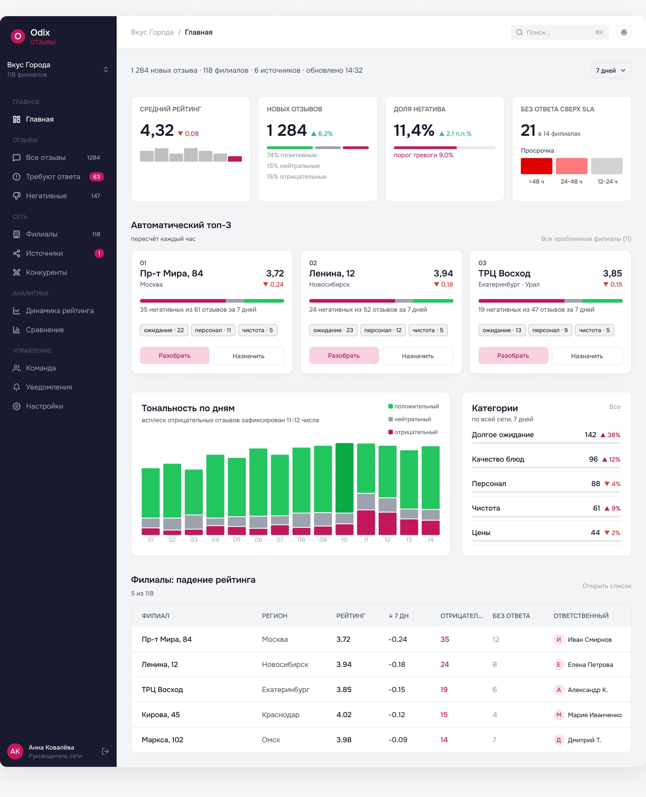
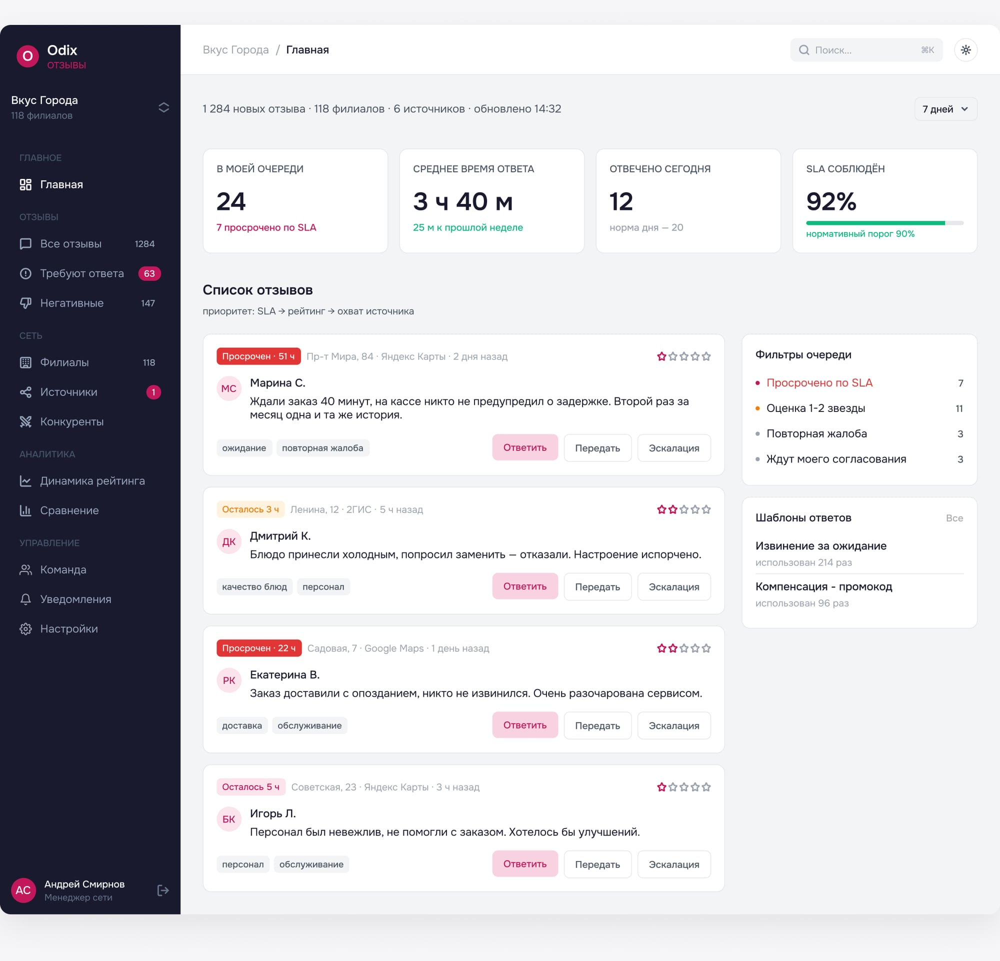
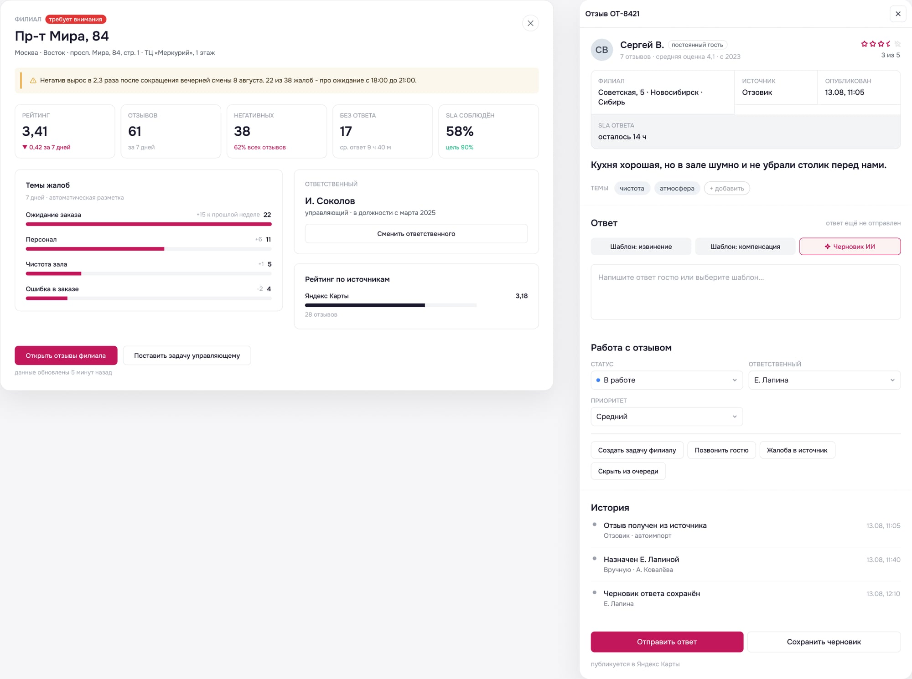
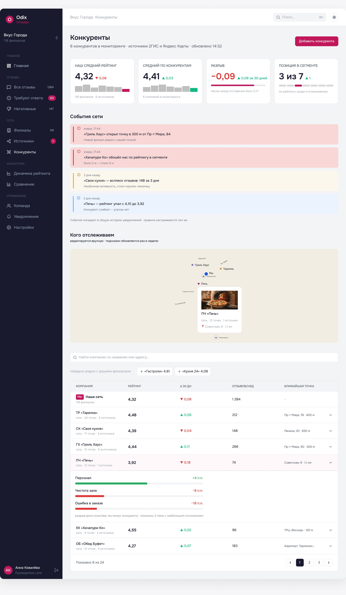

О проекте
Тестовое задание на позицию Middle UX/UI Designer в HoReCa-стартапе, выполненное соло — от бенчмаркинга до hi-fi экранов.
Артефакты: информационная архитектура, user flow, вайрфреймы, 8 hi-fi экранов, сценарий из 8 шагов и 3 продуктовые идеи. Решение защищено на созвоне с командой, назначен следующий этап.
Названия филиалов, имена и цифры на экранах — демонстрационные данные.
Задача
Одни и те же данные — две разные работы
Бриф описывал два сценария главного экрана. Руководителю нужно за 30 секунд понять, что происходит в сети и где проблемы. Менеджеру — с какими отзывами работать прямо сейчас. Это разные вопросы к одним и тем же данным, поэтому один общий дашборд для обеих ролей не подходил.
Руководитель сети
«Что происходит в компании? Есть ли проблемы? Где они?»
Видит 118 филиалов сразу. Ему не нужно читать отзывы — нужно понять, куда направить внимание и кому поручить разбор. Главный ресурс — время: ответ за 30 секунд.
Менеджер
«С какими отзывами мне работать прямо сейчас?»
Работает с потоком из нескольких площадок. Ошибка стоит дорого: пропущенный негатив висит публично и тянет рейтинг точки вниз. Главный ресурс — внимание: что ответить первым.
Ограничения
Без пользователей и реальных данных.
Доступа к пользователям и живым данным не было, поэтому роли и сценарии построены на брифе и анализе аналогов. Это гипотезы, а не результаты исследования. При этом интерфейс должен выдерживать объём: 100+ филиалов, несколько источников и большой ежедневный поток отзывов.
Как оценивали
Мышление весит больше, чем пиксели.
Критерии из брифа: продуктовое мышление — 40%, UI — 25%, информационная архитектура — 20%, собственное видение — 15%. Поэтому основное время ушло на логику приоритизации и сценарии, а не на полировку.
Исследование
Что я взял у Birdeye и 2ГИС — и что сознательно сделал иначе
Перед проектированием я разобрал два продукта: Birdeye — зрелый международный инструмент для сетей, и 2ГИС для бизнеса — сервис, которым российские рестораны уже пользуются. Цель была не скопировать, а найти место, где логика аналогов перестаёт работать на масштабе сети.
Birdeye
Сетевой уровень аналитики.
Взял: настраиваемые категории с ключевыми словами по всей сети, тренды и поиск причины прямо на входе. Модуль Competitors подтвердил гипотезу добавить в IA раздел «Конкуренты» — до бенчмарка это было только предположение.
2ГИС для бизнеса
Знакомая механика, но уровень одной точки.
Взял: работу с отзывами конкретного филиала и тематические теги. Сделал иначе: у 2ГИС теги видны только внутри одного филиала — для сети из 118 точек этого мало, поэтому в Odix теги работают на уровне всей сети. Хронологическую ленту событий заменил приоритизацией по значимости.
Ограничение: исследование вторичное — публичные видео и материалы продуктов, без интервью с пользователями.
Информационная архитектура
Структура, которая растёт без переделки навигации
Бриф просил не ограничиваться «Отзывами» и «Дашбордом». Я разбил панель на разделы по задачам: Отзывы, Сеть, Аналитика, Конкуренты, Команда, Уведомления.
Дашборд
- Главный экран — ролевые сценарии
Отзывы
- Все отзывы — список с фильтрами: источник, рейтинг, ответственный, тема (тег), статус ответа, тип
- Требуют ответа — сохранённый вид (SLA-приоритет)
- Негативные — сохранённый вид
Филиалы
- Список филиалов — рейтинг, статус, тренд по каждому
- Карточка филиала — drill-down: отзывы, динамика, сотрудники, популярные темы
Источники
- Подключённые сервисы — статус синхронизации
- Статистика по источникам — где хуже или лучше рейтинг
Аналитика
- Динамика рейтинга
- Сравнение филиалов
- Темы по сети — агрегированные теги и тренды по всем филиалам
- Отчёты (экспорт)
Конкуренты — добавленный раздел
- Сравнение своего рейтинга и отзывов с конкурентами в регионе
Команда
- Сотрудники
- Роли и доступы
- Эффективность ответов — кто быстрее и качественнее отвечает
Уведомления и настройки
- Правила оповещений — триггеры, например всплеск негатива
- История оповещений
- Настройки
Важнее самого дерева — три решения, которые в нём заложены.
Решение 1
«Требуют ответа» и «Негативные» — сохранённые виды, а не разделы.
По сути это один и тот же список отзывов с разными фильтрами. Отдельные экраны продублировали бы логику. Сохранённые виды позволяют добавлять новые срезы без изменения навигации.
Решение 2
Раздел «Конкуренты» — сверх брифа.
Рейтинг 4,3 ничего не говорит, пока его не с чем сравнить. Раздел даёт руководителю внешний ориентир. Гипотезу подтвердил модуль Competitors у Birdeye.
Решение 3
AI — свойство функций, а не отдельный раздел.
Автотеги и черновик ответа встроены туда, где они нужны. Отдельный раздел «AI» добавил бы в навигацию лишнюю сущность и не помог бы ни одной из ролей.
Ключевое решение
Топ-3 проблемных филиалов считается по скорости падения, а не по худшему рейтингу
Это решение определяет, что руководитель увидит в первые 30 секунд. Поэтому я сравнил два варианта сортировки.
Вариант А · отклонён
Сортировка по абсолютному рейтингу.
Первым всегда стоит филиал, который давно и стабильно держится внизу, — о нём и так все знают. Точка, которая за неделю резко просела (например, с 4,4 до 3,9), остаётся выше по абсолютному числу и не попадает в поле зрения, хотя проблема там острая и свежая.
Вариант Б · выбран
Сортировка по изменению рейтинга (Δ) за 7 дней.
Первыми видны свежие просадки — именно те, где вмешательство руководителя ещё может что-то изменить. Хронически слабые филиалы не теряются: они остаются в таблице и полном списке.
Что может опровергнуть решение
Шум на маленьких выборках.
У филиала с пятью отзывами в неделю один негативный отзыв даёт резкое падение Δ. В реальном продукте нужен порог минимального числа отзывов — это первое, что я бы проверил на живых данных.
Топ-3 и таблица — не дубль
«Действуй сейчас» и «проверь картину».
Обе выборки сортируются по Δ, но решают разные задачи. Топ-3 — зона немедленного действия: темы негатива и кнопки «Разобрать» / «Назначить» прямо на карточке. Таблица — более широкий срез с колонкой «Ответственный», чтобы проверить картину, прежде чем идти глубже.

Сценарий менеджера
Очередь, которая сама решает, что ответить первым
Обычная очередь отзывов хронологическая: свежие сверху, просроченные уходят вниз и тонут. Для менеджера это главный источник пропущенных SLA, поэтому очередь в Odix отсортирована по приоритету.
Формула приоритета
Тяжесть рейтинга × давность × важность филиала.
Отзыв на 1 звезду, который двое суток висит в крупном филиале, поднимается выше свежего нейтрального. Веса формулы — гипотеза: в реальном продукте их нужно калибровать на данных.
SLA на карточке
«Просрочен · 51 ч» и «Осталось 3 ч».
Таймер виден на каждом отзыве, поэтому срочность считывается без перехода в карточку. Просрочка разбита на три непересекающихся диапазона: 12–24 ч, 24–48 ч и больше 48 ч.
Скорость ответа
Фильтры и шаблоны на том же экране.
«Просрочено по SLA», «1–2 звезды», «Повторная жалоба», «Ждут моего согласования» и частые шаблоны ответов находятся рядом с очередью, а не в отдельных разделах.

Работа с негативом
Всплеск негатива: от сигнала до ответственного за 8 шагов
Бриф задавал цепочку из восьми шагов. Главный принцип, который я в неё заложил: каждый переход переносит контекст. Пользователь ни разу не фильтрует вручную то, что система уже знает.
- Обнаружить. Руководитель видит филиал в топ-3 и рост категории «Долгое ожидание» на главном экране.
- Определить филиал. Нажимает «Разобрать» прямо на карточке топ-3 — без поиска в списке.
- Понять причину. Карточка филиала открывается с гипотезой о причине и темами жалоб в динамике.
- Открыть отзывы. Список уже отфильтрован по этому филиалу и негативу.
- Обработать. Отзыв открывается в drawer поверх списка — позиция в очереди не теряется.
- Ответить. Шаблон или AI-черновик; статус SLA виден рядом с полем ответа.
- Сменить статус. В блоке «Работа с отзывом»: статус, приоритет и история действий.
- Передать ответственному. Назначение управляющего филиала с подтверждением и записью в таймлайн.
Слева — карточка филиала (шаг 3), справа — карточка отзыва в drawer (шаги 5–8).

Решение про инсайт: причина сформулирована словами, а не цифрой. Баннер в карточке филиала сообщает: «Негатив вырос в 2,3 раза после сокращения вечерней смены 8 августа». Это экономит руководителю шаг анализа. Но такая формулировка требует интеграции с графиком смен — это зависимость, которую нужно проверить с разработкой до того, как обещать её пользователям.
Сквозная механика
Один тег-движок — три режима просмотра
Тег — короткая метка, которую AI извлекает из текста отзыва: «ожидание», «персонал», «чистота». Он превращает свободный текст в данные, которые можно считать. Один и тот же тег отвечает на разные вопросы — в зависимости от того, где пользователь его видит.
Карточка отзыва
«Что здесь?»
Локальный контекст для действия: менеджер сразу видит, о чём писать в ответе, не перечитывая текст.
Список отзывов
«Где ещё это есть?»
Тег как фильтр — мост от сигнала, замеченного в аналитике, к первоисточникам.
Аналитика по сети
«Это вообще важно?»
Тег как счётчик, интересный в динамике, а не в статике. Тот же принцип, что и в топ-3: изменение важнее абсолютного значения.
Связь работает в обе стороны: от сетевого тренда к конкретному отзыву и обратно. Этот же движок переиспользован в разделе «Конкуренты» — новая функция без новой механики.
Сверх брифа
Конкуренты: приоритет событий вместо хронологической ленты
Рейтинг сети без рыночного контекста ничего не говорит. Раздел сравнивает рейтинг сети со средним по конкурентам, сопоставляет темы отзывов через тот же тег-движок и показывает, что меняется у конкурентов.
Что изменил относительно референса
Угроза · Следить · Фон.
У 2ГИС изменения показаны лентой по времени. Я разбил их по значимости, чтобы острое событие не тонуло среди фоновых. Это тот же приём, что и в топ-3 на главной, — один принцип на весь продукт. Раздел связан с «Уведомлениями» в IA.
Меньше ручной работы
Конкуренты подсказываются по геолокации филиалов.
Руководителю не нужно вспоминать всех локальных игроков. Мини-карта синхронизирована с таблицей: наш филиал выделен акцентом, конкуренты — приглушённо.
На этот раздел я попросил у команды два дополнительных дня, чтобы проработать сравнение глубже.

Продуктовое видение
Три идеи за рамками брифа
Формат из брифа: проблема → решение → польза для бизнеса. Польза здесь ожидаемая, а не измеренная.
Идея 1 · Тематические теги по всей сети
Проблема. Руководитель видит отдельные отзывы, но не паттерны за ними — непонятно, что чинить в масштабе сети.
Решение. AI извлекает повторяющиеся темы из всех отзывов, включая позитивные, с фильтром на уровне сети и филиала.
Польза. Разрозненная обратная связь превращается в управленческий сигнал: видны системные проблемы, а не единичные жалобы.
Идея 2 · SLA-приоритизация очереди
Проблема. При большом потоке менеджер не понимает, за что браться первым.
Решение. Авто-скоринг очереди (тяжесть × давность × важность филиала) и таймер SLA на каждой карточке.
Польза. Соблюдение SLA держится на структуре интерфейса, а не на ручной дисциплине.
Идея 3 · AI-черновик ответа в голосе бренда
Проблема. Писать качественный ответ на каждый отзыв в 100+ филиалах медленно, а логика ответа разная для позитива и негатива.
Решение. AI предлагает черновик: благодарность для позитива, персональное признание проблемы для негатива. Менеджер редактирует, а не пишет с нуля.
Польза. Быстрее обработка потока и единый голос бренда, кто бы из менеджеров ни отвечал.
Бонус · Проактивный сбор отзывов
Решение. Автоматическая SMS- или QR-рассылка сразу после визита через интеграцию с POS или бронированием.
Польза. Большинство довольных гостей не оставляют отзыв сами — рассылка даёт системе больше свежих данных без усилий персонала.
Результат
Решение защищено: я презентовал логику решений команде на созвоне и ответил на вопросы, после защиты был назначен следующий этап.
Самое сильное решение здесь — не визуальное. Больше всего на опыт руководителя влияет правило сортировки, а не цвета карточек: сортировка по динамике вместо абсолютного значения стала принципом, который повторяется в топ-3, аналитике тегов и мониторинге конкурентов.
Это тестовое задание: интерфейс не проверялся на реальных руководителях и менеджерах, цифры на экранах — демонстрационные. Гипотезы здесь не выдаются за результаты.
Что бы проверил первым
- Как управляющие сетей сейчас узнают о проблемах — 5 интервью.
- Понятна ли очередь по приоритету без объяснений — юзабилити-тест с менеджерами.
- Нужен ли порог объёма для Δ — проверка на реальных данных.
Как бы мерил успех
- Время до первого ответа на негативный отзыв
- Доля отзывов с соблюдённым SLA
- Доля негатива без ответа
- Время от всплеска до назначения ответственного